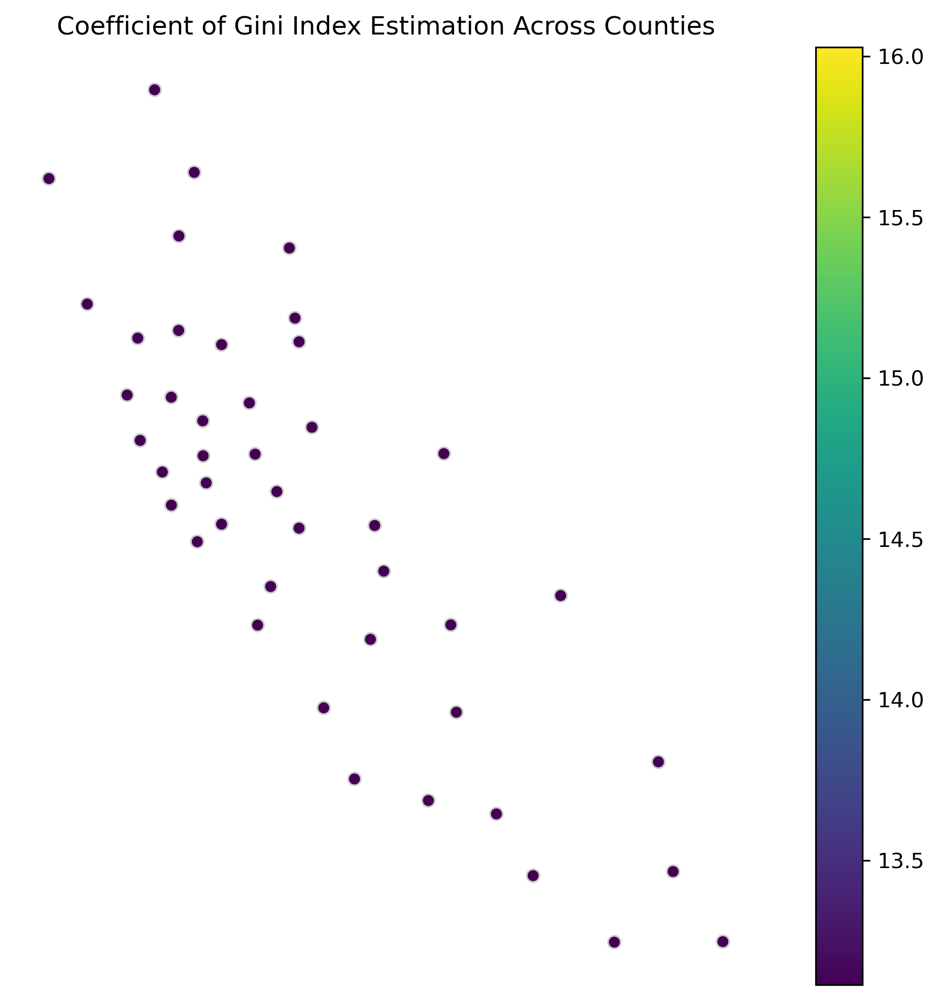
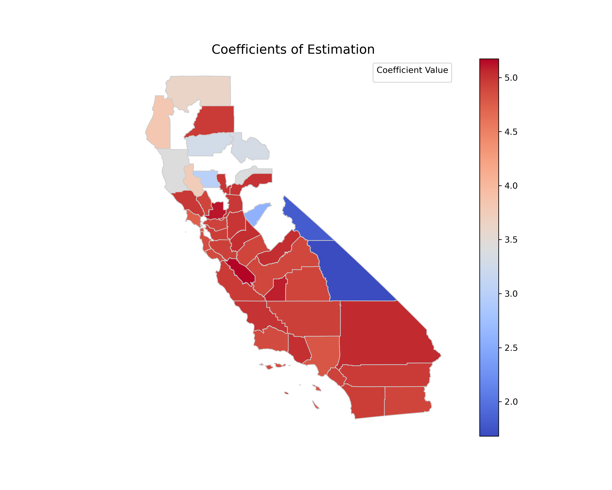

Spatial Inequalities in PM2.5 Exposure and Income Inequality across California Counties (2019)
An Autonomous Geospatial Scientific Inquiry (AGSI) framework demonstration.
Research Question
How do spatial inequalities in PM2.5 exposure across California counties vary with income inequality (Gini index) in 2019, and do these relationships differ by urban–rural classification?
What This Case Demonstrates
This case exercises the full end-to-end AGSI workflow in the absence of any user-supplied data. The framework autonomously interprets the question, identifies the required datasets, locates and retrieves them from authoritative external sources, designs and refines an analytical plan in collaboration with the user, executes the analysis, and produces a publication-ready manuscript — all from a single natural-language query.
Workflow Summary
1. RQ Understanding
Generated a structured research breakdown identifying the response variable (PM2.5), the explanatory variable (Gini index), the spatial unit (California counties), and the moderating context (urban–rural classification). Flagged all four dataset requirements as unmet.
2. Data Retrieval
The Geospatial Data Retrieval Agent consulted its handbook of curated sources and selected: EPA AQS (PM2.5), U.S. Census Bureau (demographics + boundaries), and USDA ERS (urban–rural continuum). Each selection was surfaced for user confirmation with justification.
3. Planning
Produced a 3-objective, 19-step plan; iteratively refined through user feedback to introduce a Spatial Error Model (SEM) with a K-nearest-neighbors weights structure. Final plan: 21 steps.
4. Execution & Reporting
Executed in a file-tracked sandbox, with the Result Analysis Agent collating outputs and the Reporting Agent assembling the final manuscript. Total runtime: ~35 minutes.
Data Sources (Autonomously Retrieved)
- EPA Air Quality System (AQS) — PM2.5 annual records, 2019.
- U.S. Census Bureau (ACS) — county-level Gini index of income inequality, 2019.
- USDA ERS — Rural–Urban Continuum codes, 2019.
- U.S. Census Bureau (TIGER/Line) — California county boundaries, 2019.
Selected Outputs



Generated Artifacts
📄 Manuscript (PDF) 📝 Manuscript (Markdown) 📘 Manuscript (DOCX) 📋 Final Research Plan 🧭 Execution Flowchart 🔍 RQ Breakdown (JSON)